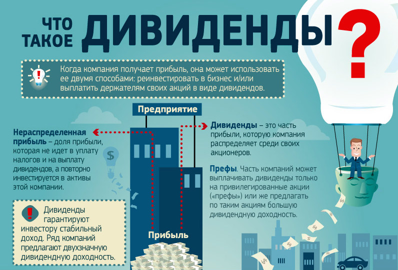
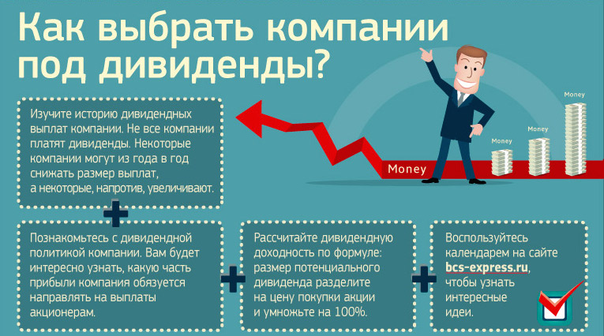
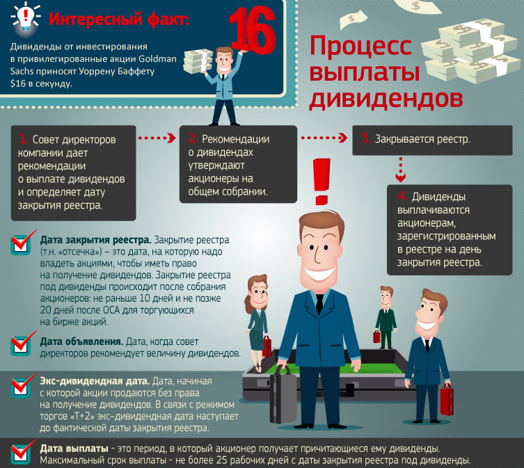
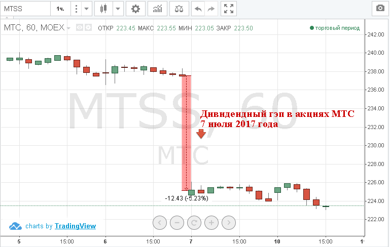
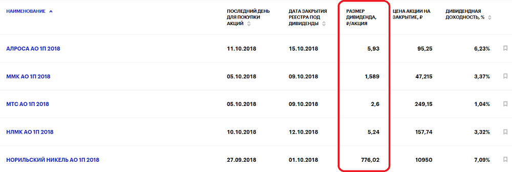
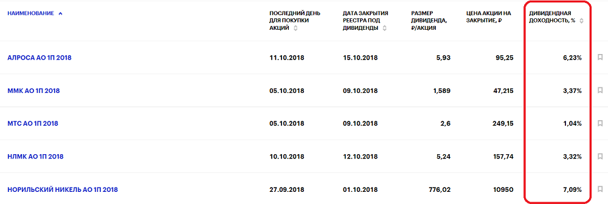
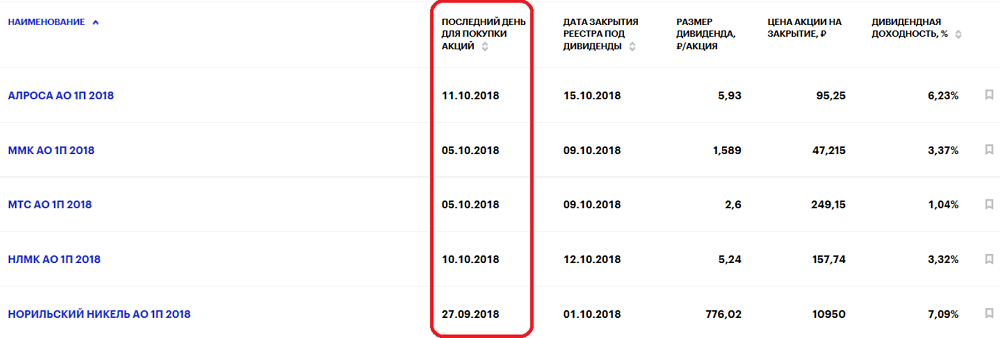
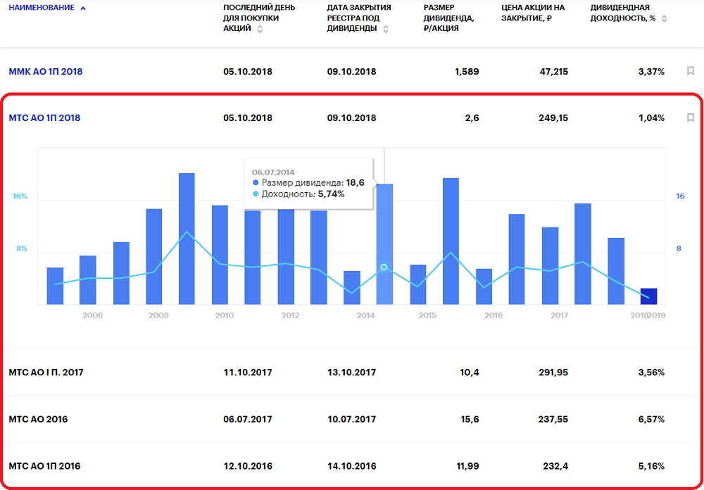

фокусе внимания большинства инвесторов на российском рынке акций постоянно находятся дивидендные выплаты. В этой статье мы разберем, как их получить, на что ориентироваться при выборе акции и когда покупать бумаги в расчете на получение дивидендной прибыли.
Приобретая акции компании на бирже, мы, по сути, становимся владельцами части ее бизнеса. И как любой владелец, имеем право получать часть прибыли от результата деятельности предприятия.
Дивиденды — это и часть прибыли, полученной организацией и компанией, которая распределяется между владельцами ее акций или ценных бумаг.
Если предприятие получило убыток, то рассчитывать на дивидендный бонус чаще всего не стоит. Но бывают и исключения: иногда топ-менеджмент компании может принять решение о выплате дивидендов из нераспределённой прибыли прошлых лет или даже занять, чтобы порадовать своих акционеров.
Как часто будет начисляться дивиденды, какая именно часть заработанного компанией будет распределяться среди акционеров — все это закреплено в дивидендной политике предприятия. Ознакомиться с ней может каждый. Для этого достаточно зайти на официальный сайт конкретного акционерного общества в раздел «Инвесторам и
Прежде чем начать формировать дивидендный портфель, в первую очередь, познакомьтесь с историей дивидендных выплат потенциальных кандидатов. Например, существуют компании, которые никогда не платили дивиденды, поэтому вряд ли стоит надеяться, что эмитент вдруг начнет «раздавать» часть нераспределенной прибыли, если этого не анонсировалось. Конечно, такие случаи бывают, но обычно компания заранее объявляет изменения в своей дивидендной политике, чтобы быть открытой и стимулировать интерес инвесторов, повышая спрос на бумаги. Поэтому выбирайте в свой портфель компании, которые стабильно выплачивают дивиденды и, даже несмотря на ухудшение рыночных условий, продолжают генерировать прибыль.
Не ленитесь — почитайте о дивидендной политике компании. Эту информацию обычно без труда можно найти на официальном сайте эмитента. Именно там описано, какую часть прибыли компания обязуется направлять на дивиденды, и сколько раз в год будут производиться выплаты.
Обязательно обратите внимание на гарантированные дивидендные платежи, которые могут составлять фиксированную сумму или процент чистой прибыли. При этом надо следить за оговорками, которые могут, например, отменять платежи в случае получения чистого убытка по РСБУ (притом, что по МСФО зафиксирована прибыль) или вычитать из величины чистой прибыли, участвующей в расчете дивидендов, «бумажные доходы», связанные, к примеру, с переоценкой активов.
Также нужно учитывать возможные различия в дивидендной политике, которые касаются привилегированных и обыкновенных акций.
Год на год не приходится и иногда даже стабильные корпорации, генерировавшие ранее хорошую чистую прибыль и щедро одаривающие своих акционеров дивидендными бонусами, вдруг выпадают из пула так называемых дивидендных историй.
Пожалуй, самый наглядный пример в истории российского рынка акций — Сургутнефтегаз. Компания всегда радовала держателей своих акций высокими дивидендами, но по итогам работы в 2016 году получила отрицательный финансовый результат из-за отрицательной валютной переоценки. Было решено выплатить дивиденды из нераспределенной прибыли прошлых лет. В итоге разбалованные высокими выплатами акционеры получили достаточно скромный бонус. Чтобы для вас маленький дивиденд не стал сюрпризом, стоит следить за квартальной отчетностью компаний и корпоративными событиями.
Открывая счет в банке, вы можете определить, как сумма вашего вклада увеличится с течением времени. С дивидендами дела обстоят несколько иначе. Цена акции — величина непостоянная. Поэтому чтобы понять, какую именно прибыль вам могут принести дивиденды, рассчитывают дивидендную доходность. Для этого разделите сумму дивиденда на цену акции, по которой вы покупаете ее, и умножьте на 100%.
Рассмотрим пример. У вас есть 1000 обыкновенных акций Газпрома, которые вы купили в начале 2016 года по цене 125 рублей за акцию. По итогам работы в 2016 году компания выплатила дивиденды в размере 7,89 рубля на акцию. Получается, что ваш дивидендный доход составил 7890 рублей, или 6,3% годовых.
Если вы не слишком разбираетесь в показателях и не готовы тратить свое время на изучения истории и дивидендной политики компании...
Аналитики часто дают свои прогнозы и заранее рассчитывают возможный размер дивидендных выплат. Например, на сайте БКС Экспресс в разделе «Дивидендный календарь» в начале каждого года мы представляем прогноз отраслевых аналитиков компании ФГ БКС по размерам дивидендных выплат ключевых компаний.
Для получения дивиденда надо пройти несколько этапов: получить необходимую информацию от компании, вовремя купить акцию и дождаться зачисления средств на свой брокерский счет.
Совет директоров, в зависимости от дивидендной политики компании, один или несколько раз в год, дает свои рекомендации по размеру дивидендов. Кроме того, он определяет дату закрытия реестра (так называемую дивидендную отсечку) — дату, на которую надо владеть акциями, чтобы получить дивиденды.
Эта информация публикуется на сайте компании или на общедоступном информационном ресурсе. Чаще всего, российские компании используют для этих целей — Центр раскрытия корпоративной информации Интерфакса e-disclosure.ru
Общее собрания акционеров (ОСА) принимает окончательное решение о выплате дивидендов. Чаще всего акционеры в ходе собрания соглашаются с рекомендациями совета директоров, и инвесторы могут быть уверены, что дивиденды по акциям будут выплачены. Однако могут быть и исключения, когда участники ОСА голосуют «против». В этом случае, несмотря на решение совета директоров, дивиденды не выплачиваются или переносятся на более поздний период. Исходя из принятой практики, вероятность такого события не превышает 5%.
Отмечаем в календаре дату закрытия реестра под дивиденды
Для любого инвестора, рассчитывающим получить дивиденды, дата закрытия реестра под дивиденды (так называемая отсечка), является очень важной реперной точкой. Это дата, на которую надо владеть акциями, если вы хотите получить выплаты.
Чтобы вам зачислили дивиденды, необязательно держать акции весь год, как полагают многие новички. Достаточно владеть ценными бумагами на день закрытия реестра. Время фиксации реестра — конец операционного дня даты закрытия реестра под дивиденды. На следующий день вы можете продать бумагу, но все равно получите дивиденд.
Согласно установленным 1 января 2014 года правилам, дата «отсечки» под дивиденды не может быть установлена до того, как принято решение об их выплате, то есть до окончательного решения общего собрания акционеров. При этом реестр под дивиденды должен закрываться не позднее 20 дней со дня ОСА. Для компаний, чьи акции торгуются на бирже, коридор сужен: дата закрытия реестра под дивиденды не может быть раньше 10 дней и позже 20 дней после собрания акционеров.
На Московской бирже акции торгуются в режиме «Т+2». Это означает, что поставка бумаг наступает на второй рабочий день после заключения сделки. Таким образом, фактическим владельцем акции вы становитесь через два дня после ее покупки. Этот момент обязательно стоит учитывать, если вы рассчитываете получить дивиденды.
Раньше, когда на Московской бирже действовал режим «T+0», чтобы получить дивиденды, необходимо было владеть ценными бумагами на день закрытия реестра акционеров («отсечки»). Если совет директоров обозначил датой закрытия реестра, например, 20 июля, то вам достаточно было купить акцию 20 июля.
При покупке акции в режиме «Т+2» фактическая смена владельца ценной бумаги происходит только после расчета и клиринга по заключенной сделке, то есть на день «Т+2» после 19:00. Таким образом, чтобы получить дивиденды, вам необходимо купить бумагу не позднее, чем за два торговых дня до даты закрытия реестра.
Рассмотрим реальный пример. Вы хотите получить дивиденды в размере 125 руб. по акциям Газпрома. Дата, на которую определяются лица, имеющие право получить дивиденды — 20.07.2017 года. С учетом режима торгов «Т+2», чтобы попасть в реестр и получить право на дивиденды, необходимо купить бумаги за два торговых дня до даты закрытия реестра. Таким образом, последний день торгов бумаг Газпрома с дивидендами — 18.07.2017.
Если вы являлись владельцем бумаги на дату отсечки с учетом режима T+2, то остается только дождаться зачисления выплат на ваш брокерский счет. Каких-то дополнительных действий предпринимать не нужно: компания сама перечислит дивиденд вашему брокеру, который впоследствии начислит их на ваш брокерский счет. Это может занять какое-то время: необходимо получить данные обо всех владельцах бумаг на Дату закрытия реестра, совершить необходимые расчеты, перечислить средства, а брокеру их распределить.
Согласно российскому законодательству, депозитарий обязан передать выплаты по ценным бумагам путем перечисления денежных средств на банковские счета, определенные депозитарным договором, своим депонентам, которые являются номинальными держателями и доверительными управляющими – профессиональными участниками рынка ценных бумаг, не позднее следующего рабочего дня после дня их получения, а выплаты по ценным бумагам иным депонентам – не позднее семи рабочих дней после дня их получения. При этом перечисление депозитарием выплат по ценным бумагам депоненту, который является номинальным держателем, осуществляется на его специальный депозитарный счет или счет депонента – номинального держателя, являющегося кредитной организацией.
Стоит отметить один нюанс. Дивиденды — это прибыль и с нее необходимо уплатить подоходный налог в размере 13%. В РФ все необходимые налоговые выплаты производит сама компания/депозитарий, и на свой брокерский счет вы получаете сумму уже очищенную от налога, то есть за вычетом 13% (это касается только дивидендов, которые поступают в рублях).
Кажется все просто? Хочешь дивиденд — купи акцию в день фиксации реестра и продай ее на следующий. Но здесь не все так просто. И вот почему
Во-первых, рынок живет ожиданиями. Опытные участники рынка постоянно следят за финансовыми показателями компаний и заранее высчитывают возможный размер дивидендных выплат. Если дивидендная доходность обещает неплохой процент, инвесторы покупают бумаги в свой «Дивидендный портфель» заранее, используя просадки или просто общее снижения рынка.
Постепенно, когда ситуация с выплатами становится более прозрачной, особенно после рекомендаций совета директоров, присоединяются и другие участники, желающие получить дивидендный доход.
Во-вторых, продажа бумаг после отсечки — массовое явление. Очистившись от дивидендов, акция, по сути, теряет свою краткосрочную дивидендную привлекательность. Инвесторы больше не могут получить по ней приятный бонус, и многое предпочитают тут же от нее избавиться.
Массовые продажи после даты закрытия реестра — традиционное явление на рынке: в первый день после отсечки цена акции снижается примерно на размер дивидендов. Это и есть так называемый дивидендный гэп, который сглаживает неэффективность рынка, не давая заработать хитрым покупателям, которые бы в обратном случае просто купили бы бумаги с плечом перед отсечкой, а затем продали после нее. Конечно, впоследствии акция может вернуться к своей стоимости до отсечки (то есть закрыть дивидендный гэп), но у каждой из них свой срок: одним надо день-два, другим год.
Внимание ДИВИДЕНДНЫЙ ГЭП! Рассмотрим пример на бумаге МТС
Таким образом, приобретая бумаги на короткий срок в расчете на дивиденды, вы рискуете купить их по самой высокой цене, а продать по самой низкой, тем самым потеряв свой дивидендный доход за счет снижения курсовой стоимости акций.
Именно поэтому грамотная покупка бумаг в расчете на дивиденды — это среднесрочная и долгосрочная история.
Дивидендный сезон понятие относительное. У каждой компании своя дивидендная политика. Одни предпочитают выплачивать часть прибыли своим акционерам каждый квартал, другие по полугодиям, третьи раз в год. Но самый большой урожай на российском рынке собирают по итогам прошедшего года. Именно этот период и принято называть «Дивидендным сезоном».
Первый массовый блок рекомендаций советов директоров по размеру дивидендов поступает в марте, последний — приходится на конец мая.
Даты закрытия большинства реестров выпадают на период с конца апреля и до конца июля. Часто компании не изменяют себе и предпочитают устанавливать отсечки в те же даты, что в прошлые годы.
Основная часть реестров тяжеловесных компаний закрывается со второй половины июня и до середины июля — это и есть пик «Дивидендного сезона».
Итак, если вы хотите поучаствовать в «охоте за дивидендами» лучше заранее приступить к выбору цели. Формировать дивидендный портфель, как показывает практика, лучше всего за три-шесть месяцев до пика дивидендного сезона.
Согласно исследованиям аналитиков ФГ БКС, дивидендная корзина генерировала самую высокую доходность в первой половине года до пика сезона, который в последние два года приходится на июль. Здесь логика связана с идеей, что за несколько месяцев до даты закрытия реестра прогнозируемость дивидендов заметно повышается, и инвесторы предпочитают держать эти бумаги до получения выплат.
Как отмечалось ранее, продавать бумаги сразу после отсечки не стоит. Если вы не имеете фундаментальных причин держать акцию долго, дождитесь, когда бумага закроет дивидендный гэп или хотя бы приблизится к цене до закрытия реестра.
Если же вы долгосрочный инвестор и подобрали в свой портфель бумаги не только исходя из высоких дивидендных выплат, обещанных компанией, но и учли фундаментальные основания для роста котировок, то есть смысл держать эти акции в течение более длительного срока, от 12-18 месяцев. Дивидендные бумаги исторически выглядят более устойчиво на падениях рынка и демонстрируют более существенный рост в периоды подъема.
Нет, конечно, краткосрочные инвесторы тоже активно участвуют в «дивидендной охоте», но принцип действий у них существенно отличается от консервативных игроков. Например, часто спекулянты отказываются от дивидендов, рассчитывая лишь на рост курсовой стоимости бумаг: купив акции за несколько недель в момент просадки, они продают ее непосредственно перед отсечкой.
Многие из них делают ставку на «темных лошадок», которые могут преподнести «сюрприз» и выстрелить на неожиданных новостях. Стоит отметить, что такая игра достаточно опасна и требует определенного опыта. Мы настоятельно рекомендуем новичкам подходить с умом к выбору актива и не идти на неоправданный риск.
Все вышесказанное может показаться начинающему инвестору довольно сложным и трудозатратным процессом. Но сегодня чтобы поучаствовать в «охоте за дивидендами» не обязательно постоянно следить за корпоративными событиями и изводить себя мыслями, что вы упустите дивиденд, просто купив/продав бумагу не в то время.
БКС Экспресс предлагает вам воспользоваться Дивидендным календарем, с помощью которого вы сможете держать руку на пульсе событий.
+ Узнайте размер дивиденда, и за какой период он выплачивается
+ Узнайте Дивидендную доходность
+ Узнайте, когда последний день для покупки бумаг с дивидендами с учетом торгов в режиме «Т+2»
+ Ознакомитесь с Дивидендной историей компании. Просто кликните на название организации, чтобы увидеть ее выплаты за прошедшие периоды.
+ Найдите бумаги с самыми высокими дивидендами и самой большой дивдоходностью, а также ближайшим днем покупки. Для сортировки используйте курсоры в заголовках столбцов календаря.
Кроме того, в начале каждого года, в Дивидендном календаре, мы публикуем возможный размер дивидендов или дивидендную доходность, рассчитанную аналитиками ФГ БКС.
Для большинства инвесторов дивиденды не являются основным способом получить прибыль. Но возможность поучаствовать в распределении прибыли корпораций не упускает практически ни один участник торгов. Это простой и довольно безопасный (если не идти на неоправданный риск) способ повысить свой доход как за счет непосредственно получения дивиденда, так и за счет роста курсовой стоимости акций во время дивидендного сезона. Высокие дивидендные выплаты российских корпораций привлекают не только отечественных инвесторов, но и нерезидентов — такие доходности трудно найти на других мировых площадках.